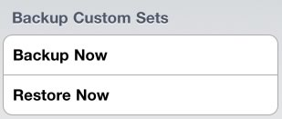

Chinese Flash allows you to backup and restore your custom study sets across multiple devices. Users looking to use Chinese Flash on an iPhone and iPad can backup sets from their iPhone, log in on an iPad and restore study sets from the iPhone. We currently transfer custom study sets only, and do not transfer any progress.
To backup custom study sets, scroll to the bottom of the "Study Sets" tab. Tap "Backup Custom Sets".

You will see a login screen where you can login using one of your accounts at several popular web sites. Choose your preferred login site and log in. You sets will be packaged and sent to the Long Weekend server. That's it, your sets are backed up!
Note: Make sure you are connected to wifi or cellular internet to backup or restore custom sets.Restoring custom sets to are device is just as easy as backing then up. Scroll to the bottom of the "Study Sets" tab. Tap "Restore Custom Sets". You will see the login screen. Choose the same service you logged into when you made your backup and log in. Once complete the study sets will be download and install.
What happens when you restore study sets? Any study sets and words in a study set missing on your device are added. Words removed on another device are not removed on your new device. We did this to prevent accidental loss if you restored an old backup and/or frequently make changes to sets.